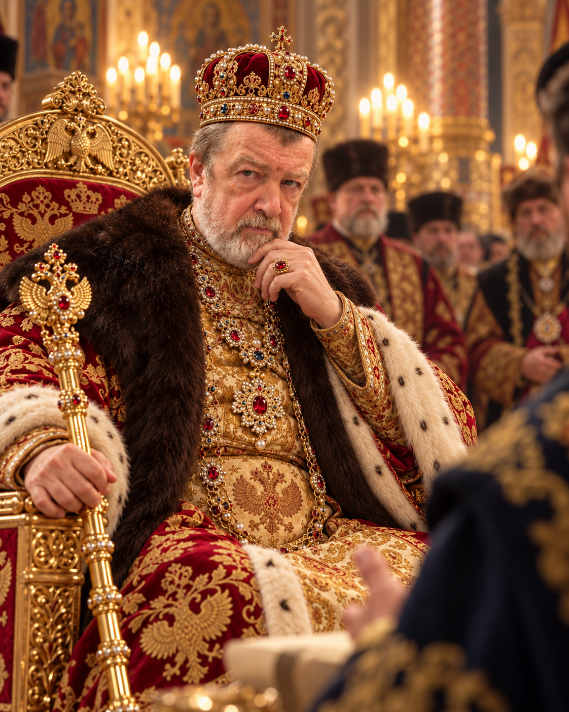
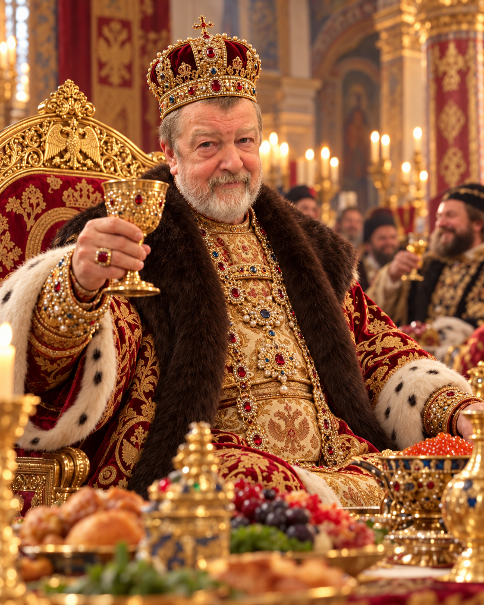
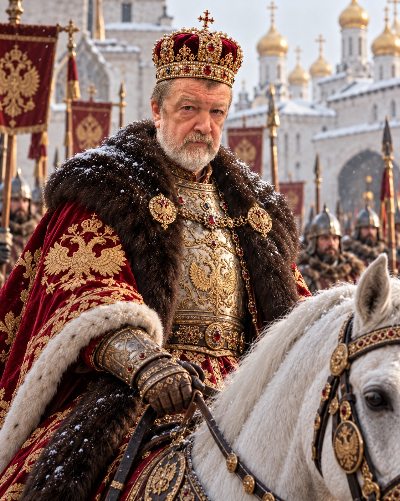

ЛЕТОПИСЬ · 01
Рождение легенды
В тот день летописцы впервые записали имя Юрия Петровича Великолепного.
Государь великой души, сурового взгляда и необычайных пристрастий. Он правил царством, любил жизнь и оставил после себя истории, которым позавидовали бы летописцы.
Открыть летопись ↓По придворным преданиям, Юрий Петрович Великолепный был правителем с характером: умел быть грозным, когда того требовали обстоятельства, и весёлым, когда звучала музыка. За столом он ценил щедрость, на балах — изящество, а в жизни — возможность самому решать свою судьбу. Его величество любил хорошо покушать, красивых женщин и славные развлечения.
«Не мешайте государю: он проходит подземелье в Raid: Shadow Legends!»
ИЗ ПРЕДАНИЙ ПРИДВОРНЫХ ЛЕТОПИСЦЕВ
Семь подлинных изображений из царской коллекции — семь эпизодов вымышленной летописи. Нажмите на любой портрет, чтобы рассмотреть его крупнее.
В тот день летописцы впервые записали имя Юрия Петровича Великолепного.
Он носил титул с достоинством, но никогда не забывал о веселье.
Между советами и указами государь находил время для своих увлечений.

Когда двор нарушал покой царя, никто не смел мешать ему завершить битву.

Юрий Петрович ценил остроумие, преданность и общество прекрасных дам.

Пиры, щедрые угощения и душевные беседы были его особой слабостью.

Истории о его характере и привычках разлетались по всему царству.
Во дворце хранилась светящаяся волшебная скрижаль. На ней царь играл в Raid: Shadow Legends: собирал героев, сражался с чудовищами и покорял подземелья. Придворные шутили, что государь правит двумя мирами одновременно.
Юрий Петрович обожал вкусно кушать. Пышные застолья, ароматное жаркое, разнообразные угощения и беседы до глубокой ночи были для него настоящим удовольствием.
Государь не скрывал восхищения красивыми женщинами. Он любил балы, изысканное общество и искусство галантного комплимента. О его обаянии ходили отдельные легенды.